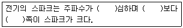
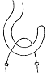
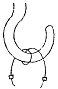
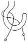
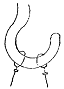
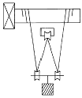
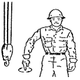

천장크레인운전기능사 (2004-04-04 기출문제)
1과목: 임의 구분
1. 천장크레인에서 집전장치라 함은 외부로부터 전력을 크레인 내에 도입하는 장치를 말한다. 아래 집전장치 중 틀린 것은?
- 폴형 집전장치
- 팬터 그래프형 집전장치
- 슈형 집전장치
- 크랭크형 집전장치
(정답률: 43%)

2. 천장크레인에서 정격하중을 거더의 중앙에서 권상할 때 거더의 처짐량 허용한도는 얼마인가?
- 스팬의 1/800 이하
- 스팬의 1/900 이하
- 스팬의 1/1,000 이하
- 스팬의 1/1,500 이하
(정답률: 64%)
3. 크레인용으로 직류전동기를 사용하는 경우의 속도제어 방식이 아닌 것은?
- 계자제어
- 전압제어
- 저항제어
- 2차 저항제어
(정답률: 45%)
4. 헬리컬 기어와 스퍼 기어에 대하여 틀린 것은?
- 두 기어 모두 축이 평행으로 되어 있다.
- 헬리컬 기어는 스퍼 기어보다 소음이 적다.
- 두 기어 모두 같은 치폭에서 전달할 수 있는 힘의 크기는 동일하다.
- 헬리컬 기어는 스퍼 기어보다 제작이 어렵다.
(정답률: 42%)
5. 키(key)에 대한 설명 중 틀린 것은?
- 구배키(taper key)는 1/100의 기울기를 준 것이다.
- 키(key)는 축에 회전체를 고정시키는데 사용된다.
- 키(key)는 수시로 급유하여 녹을 방지해야 한다.
- 키(key)는 회전력을 전달하는데 사용된다.
(정답률: 52%)
6. 권상하중 40톤, 권상속도1.5m/min인 천장크레인의 전동기의 출력(kW)은?
- 58.8
- 588
- 13.3
- 9.8
(정답률: 31%)
7. 버퍼 스토퍼(buffer stopper)에 대해 설명한 것으로 가장 올바르게 표현한 것은?
- 강판으로 접합하여 케이스를 만들고 충돌부위는 나무를 사용하여 충격의 부담을 덜어주는 스토퍼
- 새들(saddle)의 차륜을 보호하기 위하여 씌운 덮개
- 거더(girder)의 비틀림을 방지하기 위해 설치해 놓은 스토퍼
- 단단한 고무나 스프링 또는 유압을 이용하여 충돌시 충격을 완화시켜 주는 스토퍼
(정답률: 78%)
8. 다음은 기어에 대하여 서로 관계있는 것 끼리 묶어 놓았다. 틀린 것은?
- 두 축이 평행 - 헬리컬기어
- 두 축이 교차 - 인터널 기어(내치차)
- 두 축이 평행도 아니고 교차도 아님 - 웜기어
- 두 축이 평행 - 스퍼기어(평치차)
(정답률: 50%)
9. 비교적 대용량의 크레인에 사용하는 트롤리선의 종류는?
- 경동 트롤리선
- 앵글 트롤리선
- 레일 트롤리선
- 황경동 트롤리선
(정답률: 64%)
10. 하중의 종류 중 동하중이 아닌 것은?
- 되풀이하중
- 교번하중
- 사하중
- 충격하중
(정답률: 36%)
11. 양축의 중심선에 3~5° 편차가 있으며, 고속회전과 충격 등이 있는 곳에 가장 적당한 것은?
- 플랜지 축이음(Flange Coupling)
- 플렉시블 축이음(Flexible Coupling)
- 기어 커플링(Gear Coupling)
- 머프 커플링(Muff Coupling)
(정답률: 48%)
12. 훅에 대한 설명 중 틀린 것은?
- 재료는 탄소강단강품 또는 기계구조용탄소강을 사용하는 것을 원칙으로 한다.
- 안전율은 5 이상으로 한다.
- 50000kgf 이상에서는 양쪽 훅을 많이 사용한다.
- 마모는 원치수의 30% 이상 되면 교환한다.
(정답률: 75%)
13. 크레인의 급유에 대하여 설명한 것 중 틀린 것은?
- 윤활유의 선정은 점도, 유막의 강도, 변질 가능성 등을 고려하여 선정한다.
- 그리이스 니플에 급유 시에는 그리이스건을 사용한다.
- 집중급유장치는 수동 또는 전동으로 급유관 및 분배 변을 통하여 각각의 축 베어링에 일정량을 급유하는 방법이다.
- 그리이스컵이나 그리이스건 식은 집중급유장치에 비하여 급유 시간이 짧게 걸린다.
(정답률: 60%)
14. 윤활유가 유입되거나 묻어서는 안 되는 곳은?
- 와이어로프 및 드럼
- 베어링 및 하우징
- 롤러체인 및 스프라켓
- 브레이크 드럼
(정답률: 72%)
15. 천장크레인용 훅 입구의 거리가 200㎜이다. 이 훅 입구가 최소 몇 ㎜ 이상 벌어지게 되면 사용이 불가능한가?
- 240
- 230
- 220
- 10
(정답률: 45%)
16. 플렉시블 커플링의 볼트 장치부 완충재로서 적당한 것은?
- 목재
- 고무나 가죽
- 구리나 아연
- 주철
(정답률: 63%)
17. 다음 중 괄호안에 알맞는 말로 짝지워 진 것은?

- 낮을수록, 교류, 직류
- 높을수록, 교류, 직류
- 높을수록, 직류, 교류
- 낮을수록, 직류, 교류
(정답률: 72%)
18. 브레이크 라이닝 중 리벳팅 라이닝의 마모 한도는?
- 원치수의 10%
- 원치수의 25%
- 원치수의 50%
- 원치수의 80%
(정답률: 60%)
19. 홈붙이너트로 체결된 리머 볼트를 가진 플랙시블 커플링에 있어서 주로 점검하여야 할 곳은?
- 키
- 리머 볼트
- 충격 흡수용 고무
- 플랜지
(정답률: 28%)
20. 감전 예방에 대한 설명으로 옳지 않은 것은?
- 배선의 절연을 완전하게 한다.
- 감전의 염려가 있는 장소는 위험표시판 및 조명을 충분히 행한다.
- 점검 수리시는 전원 스위치를 내린다.
- 작업복은 착용하고 장갑을 사용하지 않는다.
(정답률: 82%)
2과목: 임의 구분
21. 다음 설명 중 틀린 것은?
- 천장크레인용 전동기는 외형으로 볼 때 폐쇄통풍형 또는 전폐형을 많이 사용한다.
- 전동기는 운전을 하면 열이 나지만 주위온도 40℃ 이하에서 전동기온도 80°∼90℃까지 허용된다.
- 저항기는 사용 중에 온도가 높아져서 약 350℃가 될 때도 있다.
- 천장크레인용 저항기는 용량이 크고 진동에 강한 그릿드형이 적합하다.
(정답률: 36%)
22. 기어가 취부된 구동측의 주행차륜의 직경차는 얼마 이내 이어야 하는가?
- 0.2%
- 0.3%
- 0.4%
- 0.5%
(정답률: 43%)
23. 천장크레인 운전실의 전압계가 멈추었을 때 점검해야 될 사항이 아닌 것은?
- 집전자의 이탈여부 검사
- 주 인입개폐기 점검
- 정전여부 확인
- 천장크레인 내 변압기 이상여부 점검
(정답률: 28%)
24. 절연 저항을 측정하는데 가장 적합한 것은?
- 옴메터
- 오실로스코프
- 디지탈멀티 테스터
- 메가 테스터
(정답률: 60%)
25. 니크롬선의 저항이 20Ω인 전열기를 100V의 전선에 연결하였을 경우 전류는 몇 A 인가?
- 2000
- 5
- 0.2
- 10
(정답률: 66%)
26. 다음 중 훅(Hook)을 사용할 수 없는 상태는?
- 와이어가 닿는 부분의 마모깊이가 1㎜가 되었을 때
- 훅(Hook) 입구의 벌어짐이 원칫수의 2%가 넘었을 때
- 훅(Hook) 입구의 벌어짐이 원칫수의 10%가 넘었을 때
- 훅(Hook) 국부의 마모가 원칫수의 3%에 도달했을 때
(정답률: 82%)
27. 표준형 천장크레인의 집중 급유장치로 그리스를 급유할 수 없는 부분은?
- 드럼 베어링
- 주행차륜 베어링
- 횡행차륜 베어링
- 훅(Hook) 베어링
(정답률: 75%)
28. 베어링의 온도상승 원인과 거리가 가장 먼 것은?
- 속도계수의 초과
- 과하중
- 베어링의 유격 과대
- 고점도 오일 사용
(정답률: 20%)
29. 새로운 로프로 교환하여 사용할 경우로서 맞는 것은?
- 사용 정격하중을 들어 이상이 없는지 확인하고 사용한다.
- 시험하중을 들어 이상이 없는지 확인한다.
- 사용 정격하중의 반 정도를 들고 수회 운전 후 사용토록 한다.
- 사용 정격하중을 들고 수회 운전 후 사용토록 한다.
(정답률: 46%)
30. 굵은 와이어로프일 때 어깨걸이는? (단, 로프 지름은 16㎜이상)




(정답률: 54%)
31. 기계 설치용 기중기에서 권상용 와이어로프를 8 줄 걸이로 6 호(6×37), 20 ㎜ 직경, B종을 사용할 때 최대 권양 가능한 하중은 약 얼마인가? (단, 로프의 전단하중은 23 톤)
- 14 톤
- 37 톤
- 42 톤
- 48 톤
(정답률: 34%)
32. 기중기용 와이어로프에 심강을 사용하는 목적이 아닌 것은?
- 충격하중을 분산시킨다.
- 스트랜드의 위치를 올바르게 유지한다.
- 소선끼리의 마찰에 의한 마모를 방지한다.
- 부식을 방지한다.
(정답률: 18%)
33. 와이어로프 교체기준에 맞지 않은 사항은?
- 1회 꼬임의 소선수의 10% 이상이 단선된 경우
- 로프 직경의 감소가 공칭경의 7% 이하인 것
- 킹크 현상이 발생했던 로프
- 현저한 형의 변형, 부식이 발생한 경우
(정답률: 62%)
34. 줄걸이용 와이어로프의 고정 방법 중 잔류 강도가 100%인 고정 방법은?
- 클립 고정법
- 스플라이스(엮어넣기)
- 합금 고정법
- 쐐기 고정법
(정답률: 32%)
35. 천장크레인용 와이어로프에 대한 설명으로 틀린 것은?
- 와이어로프의 재질은 탄소강이며 소선의 강도는 135 ∼ 180 kgf/mm2 정도이다.
- 고열 작업용으로 스트랜드 한줄을 심으로 하여 만든 로프도 있다.
- 와이어로프의 꼬기와 스트랜드의 꼬기의 방향이 반대인 것을 랭꼬임이라 한다.
- 랭꼬임이 보통꼬임보다 손상율이 적으며 장시간 사용에도 잘 견딘다.
(정답률: 43%)
36. 그림에서 240톤의 부하물을 들어 올리려 할 때 당기는 힘은 몇 톤인가?

- 80
- 60
- 120
- 240
(정답률: 60%)
37. 줄걸이 체인의 사용 한도에 대한 설명 중 틀린 것은?
- 안전계수가 5이상인 것
- 지름의 감소가 공칭 직경의 10%를 넘지 않은 것
- 변형 및 균열이 없는 것
- 연신이 제조당시 길이의 10%를 넘지 않은 것(임의의 5링의 길이)
(정답률: 61%)
38. 와이어의 절단부분 양끝이 되풀리는 것을 방지하기 위하여 가는 철사로 묶는 것을 무엇이라고 하는가?
- 시징
- 킹크
- 스트랜드
- 파워로크
(정답률: 59%)
39. 크레인의 용량을 표시하는 아래 용어 중 훅크, 버킷 등 달아올림 기구의 무게에 상당하는 하중을 뺀 것은?
- 안전한계 총하중
- 정격총하중
- 정격하중
- 최대정격총하중
(정답률: 76%)
40. 다음 설명 중 틀린 것은?
- 리프팅 마그네트(lifting magnet)의 보호판은 비자성강으로 만든다.
- 리프팅 마그네트의 코일은 전부 씌워져서 공기와 접촉 되는 부분이 없어 열의 발산이 나쁘다.
- 리프팅 마그네트의 용량을 나타내는 방법은 소비전력에 기준한다.
- 리프팅 마그네트(lifting magnet)는 온도가 상승하면 코일의 저항이 감소하여 전류가 감소하고 흡인력도 약해진다.
(정답률: 57%)
3과목: 임의 구분
41. 안전장치에 사용되는 것으로 권상, 권하, 횡행, 주행 등의 운동에 대한 과도한 진행을 방지하는 기구는?
- 컨트롤러
- 경보장치
- 타임 릴레이
- 리미트 스위치
(정답률: 92%)
42. 마그넷 기중기에 있어서 정전보전 최소 시간은?
- 10분 이상
- 5분 이상
- 15분 이상
- 20분 이상
(정답률: 58%)
43. 신호수가 집게손가락을 위로 올려 동그라미를 그릴 때의 신호는?
- 주행
- 권하
- 권상
- 권상 또는 권하
(정답률: 72%)
44. 운전자가 경보기를 울리거나 한쪽 손의 주먹을 다른 손의 손바닥으로 2∼3회 두드릴 경우의 수신호 내용은?
- 신호불명
- 이상발생
- 기다려라
- 물건걸기
(정답률: 62%)
45. 크래브를 급정지할 경우의 영향으로 옳지 않은 것은?
- 운반물이 횡방향으로 흔들리며 로프에 나쁜 영향을 미친다.
- 충격을 받아 크레인에 무리가 간다.
- 주행차륜에는 별로 영향을 미치지 않는다.
- 크래브가 충격을 받는다.
(정답률: 78%)
46. 운반물을 지상에 내릴 때 가장 적절한 운전 방법은?
- 운반물의 권하시 속도는 권상시의 속도와 같은 정도로 유지한다.
- 크레인 조작시의 속도는 속도에 관계없이 조작하면 된다.
- 적당한 높이까지 내린 다음 일단 정지 후 서서히 내린다.
- 운반물의 권하시 운반물의 흔들림이 없으면 속도에 관계없이 작업하여도 된다.
(정답률: 74%)
47. 크레인 수신호 중 다음은 무엇을 의미하는가?

- 훅을 내린다.
- 운전수가 내려온다.
- 운전수가 밑을 자세히 본다.
- 훅을 올린다.
(정답률: 79%)
48. 천장크레인 작업의 안전수칙을 열거한 것 중 적합하지 않은 것은?
- 달아올린 짐밑에 사람의 통행을 막는다.
- 운반물을 작업자 상부로 운반한다.
- 지정된 신호수 외에는 신호를 하지 않는다.
- 임의로 스위치 박스에 손대지 않도록 한다.
(정답률: 75%)
49. 천장크레인에 있어서 운전을 하고자 할 때 최초에 행하여야 할 사항은?
- 권상용 제어기의 노치(notch)만을 '0" 노치에 두고 메인 스위치를 'on'으로 작동시킨다.
- 주행용 제어기의 노치만을 '0' 노치에 두고 메인 스위치를 'on'으로 작동시킨다.
- 모든 제어기의 노치에 상관없이 메인 스위치를 'on'으로 작동시킨다.
- 모든 제어기의 노치를 '0' 노치에 두고 메인 스위치를 'on'으로 작동시킨다.
(정답률: 78%)
50. 주행운전 방법으로 틀린 것은?
- 진행 중인 방향에 위험물의 유무를 확인하며 주행한다.
- 정지위치에 도달할 때까지 주행을 작동시켰다가 브레이크를 사용 정지한다.
- 급격한 주행으로 인해 달려있는 짐이 흔들리지 않도록 운전해야 한다.
- 주행 시작시 필히 경보를 울려야 한다.
(정답률: 70%)
51. 전기 화재 소화시 가장 적당치 못한 소화기는?
- 증발성 액체 소화기
- 분말 소화기
- CO2 소화기
- 포말 소화기
(정답률: 40%)
52. 다음 안전사항 중 설명이 잘못된 것은?
- 전기장치는 반드시 접지하여야 한다.
- 모든 계기 사용시는 최대 측정 범위를 초과하지 않도록 해야 한다.
- 퓨즈는 용량이 맞는 것을 끼워야 한다.
- 전선의 접속은 접촉저항이 크게 하는 것이 좋다.
(정답률: 88%)
53. 전기 기기에 의한 감전 사고를 막기 위하여 필요한 것은?
- 방폭등
- 대지 전위 상승장치
- 접지설비
- 고압계
(정답률: 84%)
54. 일반공구 사용에 있어 안전관리에 적합치 않은 것은?
- 손이나 공구에 기름이 묻었을 때에는 완전히 닦은 후 사용할 것
- 공구는 사용 전에 점검하여 불안전한 공구는 사용하지 말 것
- 작업특성에 맞는 공구를 선택하여 사용할 것
- 능률이 요구될 때 공구를 옆 사람에게 넘겨줄 때는 가볍게 던져줄 것
(정답률: 87%)
55. 가연성 가스 저장실에서의 안전사항으로 가장 적당한 것은?
- 기름걸레를 통과 통 사이에 끼워 충격을 적게 한다.
- 사람들이 담뱃불을 가지고 출입한다.
- 휴대용 전등을 사용한다.
- 조명은 형광등이나 백열등으로 한다.
(정답률: 67%)
56. 가동하고 있는 원동기에서 화재가 발생하였다. 그 소화작업으로 가장 먼저 취해야 할 안전한 방법은?
- 점화원을 차단한다.
- 원동기를 가속하여 팬의 바람으로 끈다.
- 모래를 뿌린다.
- 물을 붓는다.
(정답률: 95%)
57. 렌치 작업시의 주의사항 설명 중 틀린 것은?
- 렌치를 해머로 두드려서는 안 된다.
- 높거나 좁은 장소에서는 몸을 안전하게 하고 작업한다.
- 너트보다 큰 치수를 사용한다.
- 너트에 렌치를 깊이 물린다.
(정답률: 76%)
58. 전기 감전위험이 생기는 경우로 가장 거리가 먼 것은?
- 앞치마를 하지 않았을 때
- 옷이 비에 젖어 있을 때
- 발밑에 물이 있을 때
- 몸에 땀이 배어 있을 때
(정답률: 80%)
59. 가스 용접의 안전사항으로 적합치 않은 것은?
- 토치에 점화시킬 때에는 산소 밸브를 먼저 열고 다음에 아세틸렌 밸브를 연다.
- 산소누설 시험에는 비눗물을 사용한다.
- 가스를 들이 마시지 않도록 한다.
- 토치 끝으로 용접물의 위치를 바꾸면 안 된다.
(정답률: 58%)
60. 유해광선이 있는 작업장에 보호구로 가장 적절한 것은?
- 안전모
- 보안경
- 방독마스크
- 귀마개
(정답률: 70%)
크랭크형 집전장치는 손잡이를 돌려서 발전기를 구동시켜 전기를 생산하는 방식으로, 소형 크레인에서 많이 사용됩니다. 폴형 집전장치는 크레인의 전원을 고정된 위치에서 공급하는 방식으로, 크레인이 이동할 때 전원선을 따라 이동해야 합니다. 슈형 집전장치는 크레인의 이동과 함께 전원선을 끌어당기는 방식으로, 크레인의 이동이 자유롭습니다. 팬터 그래프형 집전장치는 크레인의 전원을 고정된 위치에서 공급하는 방식으로, 폴형 집전장치와 유사하지만 구조가 다릅니다.